Our method enables efficient streaming of high-quality, consistent 3D videos by addressing the challenges of view synthesis in both spatial and temporal dimensions.
Abstract
We introduce a novel geometry-guided online video view synthesis method with enhanced view and temporal consistency. Traditional approaches achieve high-quality synthesis from dense multi-view camera setups but require significant computational resources. In contrast, selective-input methods reduce this cost but often compromise quality, leading to multi-view and temporal inconsistencies such as flickering artifacts. Our method addresses this challenge to deliver efficient, high-quality novel-view synthesis with view and temporal consistency. The key innovation of our approach lies in using global geometry to guide an image-based rendering pipeline. To accomplish this, we progressively refine depth maps using color difference masks across time. These depth maps are then accumulated through truncated signed distance fields (TSDF) in the synthesized view's image space. This depth representation is view and temporally consistent, and is used to guide a pre-trained blending network that fuses multiple forward-rendered input-view images. Thus, the network is encouraged to output geometrically consistent synthesis results across multiple views and time. Our approach achieves consistent, high-quality video synthesis, while running efficiently in an online manner.Overview
Given multi-view RGB-D videos, our method forward-renders a subset of views into the target camera using 3D Gaussian splatting. A CNN is then used to blend the forward-rendered images, and inpaint disoccluded regions to generate the novel view. The blending network is guided by depth from a truncated signed distance field (TSDF) which is regularized to be view and temporally consistent. This geometric guidance enables the network to produce consistent novel view results.
Results on the DyNeRF Dataset
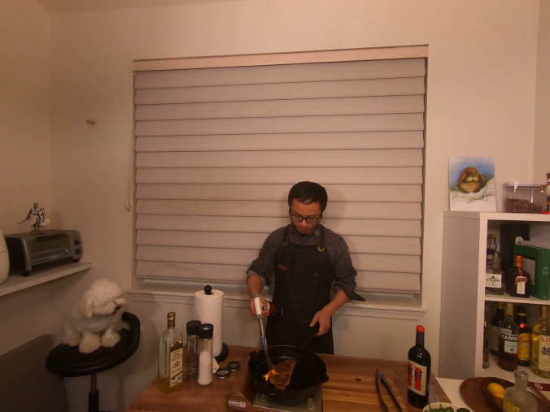
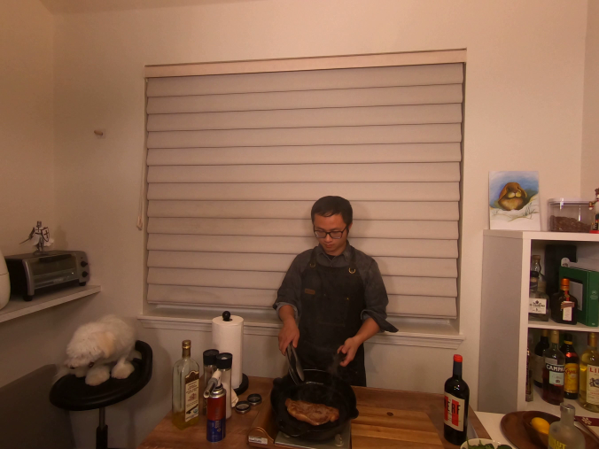
Baseline method (left) vs Ours (right). Click to select different methods and scenes on the DyNeRF dataset.
Please move the slider to view the baseline (left) overlayed on our method (right).
Results on the ENeRF-Outdoor Dataset
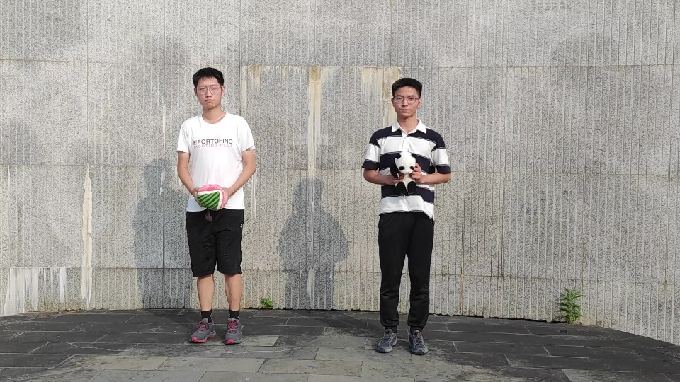
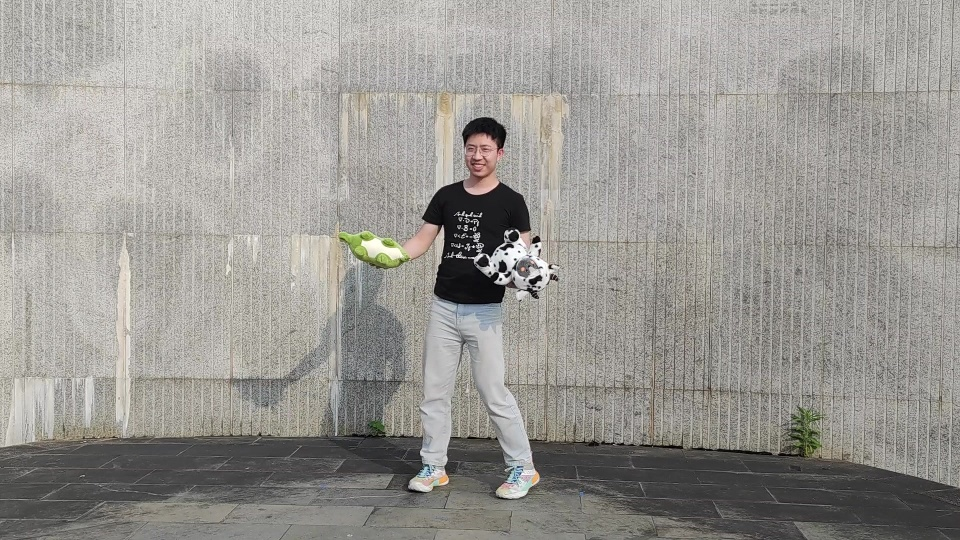
Baseline method (left) vs Ours (right). Click to select different methods and scenes on the ENeRF-Outdoor dataset.
Please move the slider to view the baseline (left) overlayed on our method (right).
Results on the D3DMV Dataset
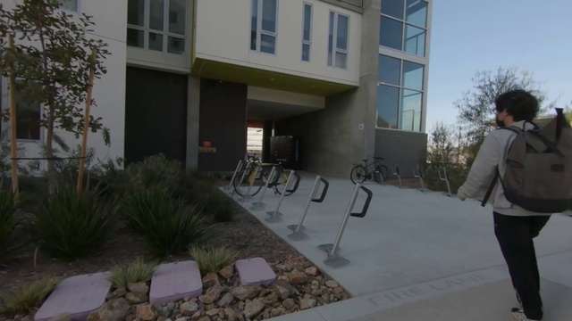
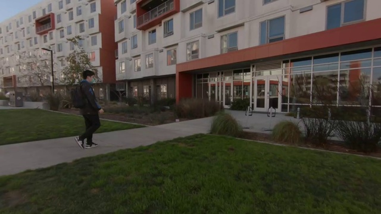
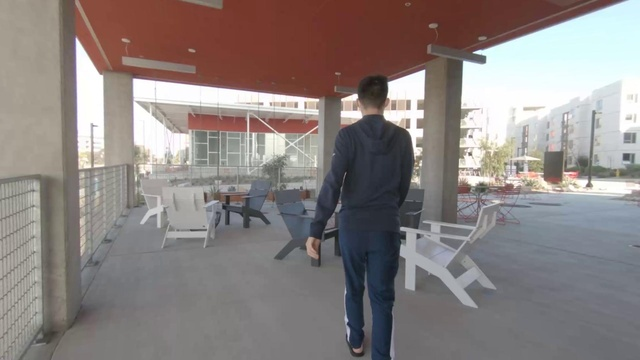
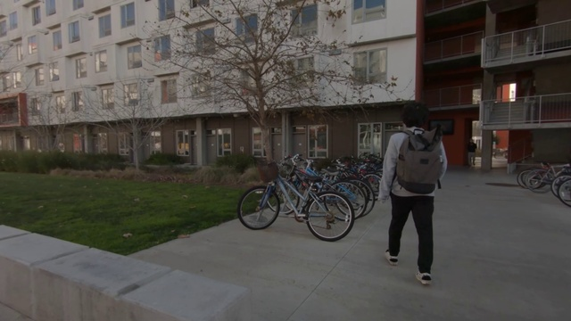
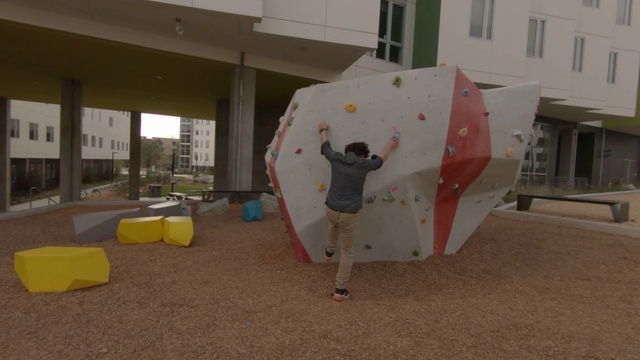
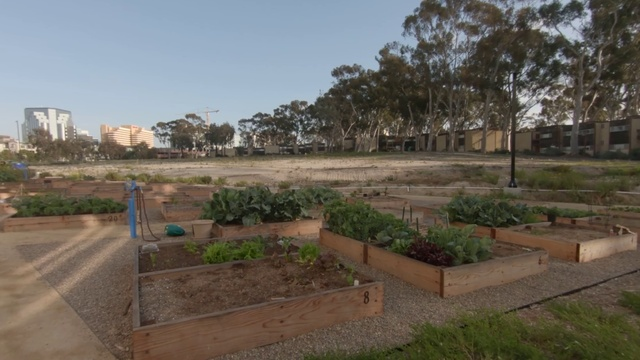
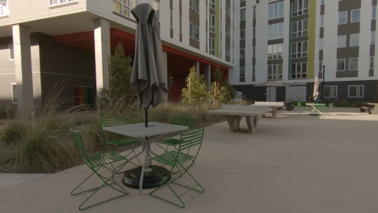
Baseline method (left) vs Ours (right). Click to select different methods and scenes on the D3DMV dataset.
Please move the slider to view the baseline (left) overlayed on our method (right).